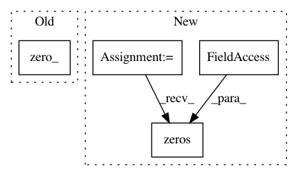

8d3775a7d695cea3bc398eb3e84da9606184299a,layers/tacotron2.py,Decoder,_init_states,#Decoder#Any#Any#Any#,158
Before Change
self.decoder_hidden = self.decoder_rnn_inits(
inputs.data.new_zeros(B).long())
self.decoder_cell = Variable(
inputs.data.new(B, self.decoder_rnn_dim).zero_())
self.context = Variable(
inputs.data.new(B, self.encoder_embedding_dim).zero_())
After Change
self.query = torch.zeros(B, self.query_dim, device=inputs.device)
self.attention_rnn_cell_state = torch.zeros(B, self.query_dim, device=inputs.device)
self.decoder_hidden = torch.zeros(B, self.decoder_rnn_dim, device=inputs.device)
self.decoder_cell = torch.zeros(B, self.decoder_rnn_dim, device=inputs.device)
self.context = torch.zeros(B, self.encoder_embedding_dim, device=inputs.device)
self.inputs = inputs
self.processed_inputs = self.attention.inputs_layer(inputs)
self.mask = mask
In pattern: SUPERPATTERN
Frequency: 3
Non-data size: 4
Instances
Project Name: mozilla/TTS
Commit Name: 8d3775a7d695cea3bc398eb3e84da9606184299a
Time: 2019-09-23
Author: egolge@mozilla.com
File Name: layers/tacotron2.py
Class Name: Decoder
Method Name: _init_states
Project Name: ikostrikov/pytorch-a2c-ppo-acktr
Commit Name: e2634f68394eaa1f2c9c07223a9cdce0d2ab34fc
Time: 2018-11-13
Author: FKlemt@gmx.de
File Name: envs.py
Class Name: VecPyTorchFrameStack
Method Name: reset
Project Name: Kaixhin/Rainbow
Commit Name: d4255c9c4d04cf7f09881b272535cfdc155957a7
Time: 2018-04-28
Author: design@kaixhin.com
File Name: env.py
Class Name: Env
Method Name: _reset_buffer